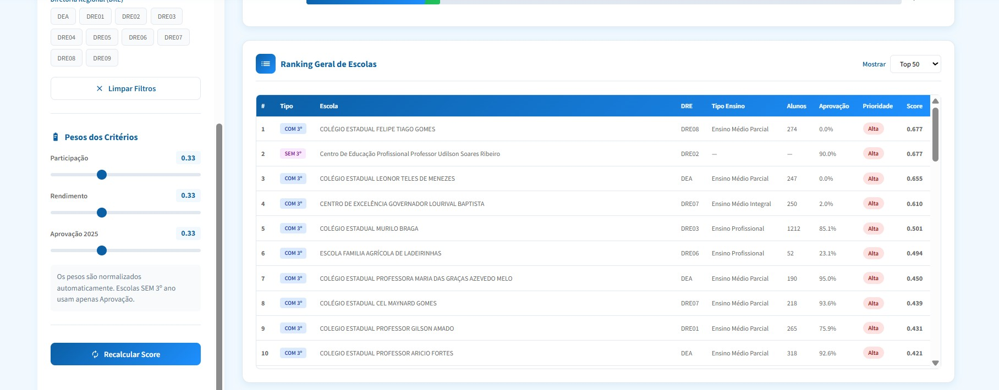

Contexto e Problema
A preparação da rede estadual de Sergipe para o SAEB 2025 (Sistema de Avaliação da Educação Básica) exigia a identificação e priorização das escolas que mais necessitavam de apoio técnico e pedagógico para melhorar seus resultados na avaliação nacional. Com centenas de escolas na rede, um processo subjetivo de seleção não conseguiria alocar eficientemente os recursos limitados de preparação onde teriam maior impacto.
Imagens do Sistema



Solução Desenvolvida
Desenvolvi uma ferramenta interativa de priorização que aplica análise multicritério para classificar objetivamente as escolas:
- Definição de critérios: Estabelecimento de critérios de priorização baseados em indicadores de desempenho, níveis de risco e características das escolas
- Análise em Python: Script de processamento que aplica a lógica multicritério ao dataset de escolas e calcula pontuações compostas de prioridade
- Dashboard HTML interativo: Visualização gerada para navegação nos resultados de priorização
- Aplicação web: Interface em Google Apps Script com navegação por sidebar, implantada como aplicação web para uso direto pela equipe gestora
- Guias de implantação: Instruções completas de instalação para Google Apps Script e deploy como aplicação web
Bases de Dados Utilizadas
- Dataset de priorização multi-indicador por escola (csv.priorizacao.csv)
- Resultados históricos de avaliações externas
- Indicadores de risco educacional da rede
Tecnologias Utilizadas
Resultados e Impacto
A ferramenta de priorização permitiu à Secretaria de Educação de Sergipe direcionar objetivamente os esforços de preparação para o SAEB 2025 às escolas com maior necessidade de apoio. O sistema substituiu processos subjetivos de seleção por uma metodologia transparente, baseada em dados e replicável — contribuindo para uma alocação mais eficiente de recursos pedagógicos e técnicos em toda a rede estadual.